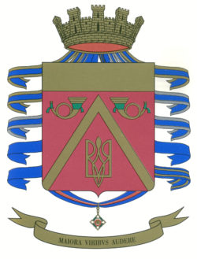

3° Reggimento Bersaglieri

Attuale Comandante
Col. Alessandro Latino
Sede Capo Teulada (CA)
STORIA DEL 3° REGGIMENTO BERSAGLIERI
Il Comando dei Bersaglieri del 3° Corpo d'Armata formato a seguito Regio Decreto 24 gennaio 1861, il 31 dicembre dello stesso anno prende nome di 3° Reggimento Bersaglieri con soli compiti amministrativi e disciplinari.
L'unità, a datare dal 1° gennaio 1871, assume anche fisionomia operativa ed è formata dai Battaglioni XVIII, XX, XXV e XXXVIII; dal 1° ottobre 1910 dispone anche del III Battaglione ciclisti soppresso poi nel novembre 1919.
Nel luglio 1924 tutto il Reggimento è trasformato in Unità ciclisti e tale rimarrà sino al 1936.
Nel 1939 il Reggimento è inquadrato nella Divisione Celere "Principe Amedeo Duca d'Aosta" con la quale prende parte al Secondo Conflitto Mondiale.
Al rientro dal Fronte Russo si disloca per riordinarsi in Emilia dove verrà sciolto a seguito dell'armistizio dell'8 settembre 1943.
Ricostituito il 1° luglio 1946, il 3° Reggimento Bersaglieri inquadra anche il Battaglione Bersaglieri "Goito" che ha partecipato alla Guerra di Liberazione.
Sciolto il 20 ottobre 1975, resta in vita il XVIII Battaglione con il nome di 18° Battaglione Bersaglieri "Poggio Scanno" per la 3^ Brigata meccanizzata "Goito" della Divisione corazzata "Centauro".v
Il 29 agosto 1991 si ricostituisce il Reggimento in fase sperimentale come 3° Reggimento Bersaglieri "Goito" che dal 1° agosto 1992 assume la denominazione attuale.
Il 25 novembre 2009 si trasferisce dalla sede di Milano al Poligono di Capo Teulada dove assorbe il battaglione del 1° Reggimento corazzato.
Stemma Araldico
SCUDO: di porpora, al capriolo d'oro accostato da due corni da caccia d'oro ornati da un fiocco verde ed accompagnato in punta dal tridente d'Ucraina d'oro.
Il tutto abbassato al capo d'oro.
CORONA TURRITA
ORNAMENTI:
(1) Lista bifida: d'oro, svolazzante, collocata sotto la punta dello scudo, incurvata con la concavità rivolta verso l'alto, riportante il motto "MAIORA VIRIBUS AUDERE".
2) Onorificenza: accollata alla punta dello scudo con l'insegna pendente al centro del nastro con i colori della stessa.
(3) Nastri rappresentativi delle ricompense al Valore: annodati nella parte centrale non visibile della corona turrita, scendenti svolazzanti in sbarra ed in banda dal punto predetto, passando dietro la parte superiore dello scudo.
Sintesi della blasonatura
Lo scudo pieno con la smalto porpora (colore tradizionale del Corpo) è espressione delle alte virtù militari del reggimento, ed a dare maggiore risalto a tante virtù è stato inserito un "capriolo"d'oro, considerato in araldica pezza onorevole di primo ordine.
Inoltre, per evidenziare l'essenza bersaglieresca concentrata nel 3° reggimento, sono riportati nello stemma due corni da caccia con fiocco verde, fregio peculiare della Specialità.
Con il capo d'oro sono simboleggiate le tre Medaglie d'Oro al Valor Militare concesse al reggimento.
Decorazioni alla Bandiera di Guerra del 3° Reggimento
Croce di cavaliere dell'Ordine Militare di Savoia
Decreto 5 giugno 1920:
Nei duri cimenti della guerra, nella tormentata trincea o nell'aspra battaglia conobbe ogni limite di sacrificio e di ardimento; audace e tenace, domò infaticabilmente i luoghi e le fortune, consacrando con sangue fecondo la romana virtù dei figli d'Italia. Guerra 1915-18.
Croce di cavaliere dell'Ordine Militare di Savoia
Decreto 27 gennaio 1937:
Pari alla sua fama millenaria, è espressione purissima delle alte virtù guerriere della stirpe, si prodigava eroica, generosa, tenace in tutte le battaglie, dando prezioso contributo di valore e di sangue alla vittoria.
Guerra Italo-Etiopica 3 ottobre 1935 5 maggio 1936.
Medaglia d'Oro al Valor Militare
Decreto 31 ottobre 1920:
Al III btg. Ciclisti: Con audacia indomabile si affermava su posizioni asprissime, a prezzo di un immane sacrificio di sangue. Con la sua virtù e la sua fede rinnovellò, nel durissimo travaglio, le sue forze, sì che, nell'ora dell'assalto, schiantò e travolse d'un solo impeto le formidabili difese nemiche.
Si oppose con audace azione di retroguardia all'avanzata nemica dell'ottobre 1917 e diede largo tributo di sangue sul Piave, durante la prima resistenza su quel fronte e nella difesa del giugno 1918. Si distinse per slancio ed ardimento nella battaglia di Vittorio Veneto.
Vermegliano 19-21 luglio 1915, Monte Sei Busi 28-29 luglio 1915, Quota 85 Monfalcone 6 agosto 1916.
Medaglia d'Oro al Valor Militare
Decreto 30 gennaio 1948:
Al reggimento: Compatta e gagliarda unità di guerra, salda amalgama di energie, di volontà intrepida e di temeraria arditezza fusa nell'abilità manovriera, in dieci mesi ardua campagna ha dato vivido risalto alle superbe tradizioni, onde sono onusti il suo ceppo ed il suo nome chiamato alla battaglia del Nipro dopo mille chilometri di rudi marce, imponeva all'avversario la invitta superiorità delle sue baionette, che con travolgente irruenze e lena inesausta, sgominando ripetutamente dense e rabbiose retroguardie nemiche, faceva balenare prime e vittoriose nel cuore del Donez.
Riaffermata in rischiose azioni esplorative la bella audacia dei suoi battaglioni e distintosi pel contributo di valore nel soccorso a nostra colonna avviluppata, teneva ovunque in scacco l'avversario, strappandogli capisaldi muniti e preziosi punti di appoggio.
Incaricato infine della tutela di un delicato settore difensivo, ancorché ridotto di numero ed esposto ai rigori di un inverno eccezionalmente ostile, reagiva con indomito coraggio e fede suprema all'urto di forze nemiche dieci volte superiori, arginando, con l'incontrollabile diga dei petti e degli animi, la furia che minacciava di stremarlo e portando i suoi piumetti ad affermarsi in una scia di sangue oltre le posizioni riconquistate.
Fronte Russo. Nipro, Uljanowka, Maximaljanowka, Sofjewka, Stalino, Panteleimonowka, Rassipnaja, Michailowka, Stoshkowo agosto 1941 – maggio 1942.
Medaglia d'Oro al Valor Militare
Decreto 31 dicembre 1947:
Al reggimento: Superba unità di guerra, non paga del grande sangue versato e delle eroiche imprese compiute nel precedente cielo operativo, si prodigava ancora con suprema dedizione per il buon esito in numerosi combattimenti.
Balzato per primo dalle posizioni tenacemente difese durante tutto l'inverno, prendeva d'assalto un importante centro ferroviario e creava la premessa per afferrare alla gola il nemico ripiegante, distruggerlo e conquistare una ricca zona mineraria.
Lontana avanguardia delle truppe italiane in Russia con la 3ª Divisione Celere, slanciatosi con fulminea marcia dal Donez al Don, attaccava e conquistava con dura e sanguinosa lotta una munitissima testa di ponte, sconvolgendo il piano offensivo nemico.
Travolto l'avversario in rovinosa fuga, ne frustrava i successivi suoi ritorni offensivi compiuti con forze sempre rinnovantisi.
Chiamato all'arresto di masse nemiche transitate sulla destra del Don, le ricacciava con impetuoso attacco; quindi, inchiodato al terreno, costituiva insormontabile barriera ai reiterati, sanguinosi, ma vani assalti nemici, spezzandone l'impeto e facendo brillare di piena, fulgida luce, di fronte agli alleati ed allo stesso nemico, le virtù guerriere della stirpe italica.
Fronte Russo. Rassipnaja, Staz, Fatschewka, Iwanowka, Serafimowitsch, Broboski, q. 244,4 Jagodnyi 11 luglio – 1º settembre 1942.
Medaglia d'Argento al Valor Militare
Decreto 24 luglio 1947:
Al battaglione "Goito: Raccolse gli uomini onde riassunse le gesta di tutte le fiamme cremisi nella Guerra di Liberazione: cinquantunesimo battaglione del I Raggruppamento motorizzato, che offerse l'eroico olocausto degli allievi ufficiali di complemento a Monte Lungo; XXIX e XXXIII battaglione e prima compagnia motociclisti del C.I.L. che strenuamente guarnirono monte Marrone e le Mainarde, che spiccarono su monte Mare con balzo leonino, che combatterono duramente a monte Granale di lesi, che incalzarono saettando il nemico ad Urbino e ad Urbania; battaglione "Goito" del Gruppo "Legnano", che immolò le avanguardie audacissime su Poggio Scanno prematuramente conquistato.
Da Cassino a Bologna, sempre pari alle prestigiose tradizioni del Corpo, con impeto veemente e con generosa, alata baldanza. Campagna di liberazione, 6 dicembre 1943 – 30 aprile 1945.
Medaglia d'Argento al Valor Militare
Decreto 6 dicembre 1866:
Al XXV btg.: Il giorno 23 a Borgo, la notte a Levico, si distinse per coraggio, sangue freddo e disciplina nell'attacco di quelle difficili posizioni, essendo in avanguardia al 28º Reggimento fanteria. Borgo, 25 luglio 1866.
Medaglia d'Argento al Valor Militare
Decreto 29 ottobre 1922:
Al III btg. Ciclisti: Assaltava con impeto eroico una fortissima posizione carsica, aprendosi il varco nei reticolati a prezzo di purissimo sangue ed in concorso con altri reparti, ne manteneva l'occupazione in tre giorni di epica lotta, malgrado i violenti bombardamenti ed i ritorni offensivi del nemico. Carso – quota 144, 14-15-16 settembre 1916.
Medaglia di Bronzo al Valor Militare
Decreto 3 ottobre 1860:
Al XXV btg.: Per essersi lodevolmente diportato nella presa di Ancona.
Ancona, 26 settembre 1860.
Medaglia di Bronzo al Valor Militare
Decreto 30 settembre 1862:
Al XXV btg.: Perché diede speciali prove di valore e di sagacia militare.
Aspromonte, settembre 1862
Medaglia di Bronzo al Valor Militare
Decreto 21 gennaio 1937
Al reggimento: Continuando in terra africana le tradizioni eroiche della Grande Guerra, nelle operazioni per la conquista del Tigrai, dava continua prova di alto sentimento del dovere e di dedizione alla Patria. Con azione salda e brillante, con slancio entusiastico, con unanime valore conquistava le alture di Belesat, infrangendo l'accanita resistenza dell'agguerrito avversario e contribuendo validamente alla conclusione vittoriosa della battaglia dell'Endertà. Belesat, 15 febbraio 1937
Medaglia d'Argento al Valore dell'Esercito
Decreto 17 maggio 1985:
Al reggimento: Inquadrato nelle forze del contingente italiano impegnato in Somalia per le operazioni di soccorso e protezione alla popolazione, nonostante le oggettive difficoltà ambientali, si prodigava con totale dedizione ed elevata professionalità nella delicatissima e pericolosa missione.
Operando in condizioni estreme di sicurezza, i suoi uomini hanno sempre confermato sia in attività di controllo del territorio, sia in azioni di rastrellamento per la ricerca d'armi sia in operazioni anti banditismo e/o scorte a convogli umanitari, elevate capacità operative, altissimo senso del dovere e coraggio non comune. Coinvolto in conflitti a fuoco, reagiva sempre con efficacia, dimostrando in ogni circostanza la capacità di discriminare e graduare le reazioni del proprio personale evitando così inutili spargimenti di sangue.
La fierezza, l'orgoglio e la certezza di portare vitale soccorso umanitario a una popolazione disperata e la necessità di ridare ordine a un paese martoriato dalla guerra civile sono state le motivazioni che hanno contraddistinto l'operato. Chiaro esempio di grande perizia ed estremo valore che hanno concorso a elevare e nobilitare il prestigio dell'Esercito Italiano.
Somalia, 9 ottobre 1993 – 22 gennaio 1994.
Medaglia di Bronzo al Merito Civile
Decreto 1 dicembre 1970:
In occasione di una violenta alluvione si prodigava generosamente, con uomini e mezzi, in difficili ed estenuanti interventi di soccorso alle popolazioni colpite, contribuendo validamente a contenere e ridurre i disastrosi effetti della calamità.
Provincia Vercelli, 2 novembre-20 dicembre 1968.